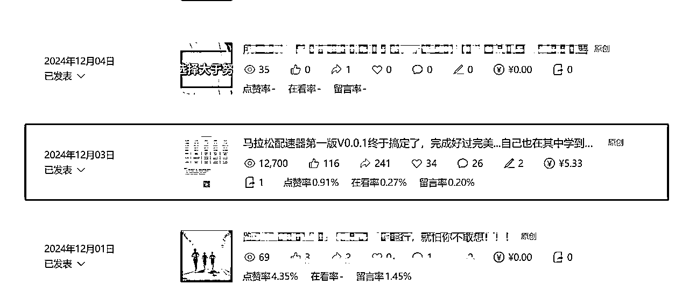
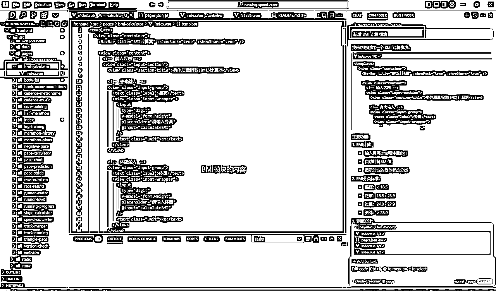

来源：https://te74jxs21s.feishu.cn/docx/VGbMdLd8xokh8Dx4Jj5c5KP2n9f
大家好，我是小Q！一名爱跑步的程序员！
一直在学别人，这次自己根据自己的兴趣+自身技能+AI出发，反而收获了意想不到的结果！
使用cursor制作简单网页版测试：通过公众号+网页的形式来试水反响，结果文章直接就爆了，还收到了赞赏，且加了20多人！

就是如此简陋的页面，说明需要还是很大的~！
使用cursor开始微信开发小程序
第一阶段的反响不错，开始就想着公众号+微信小程序结合起来吃一个人的两套收益！
2天开通流量主，前面用了3天完成小程序的认证(30元一年)和备案！我的小程序是工具计算类小程序，所以我没有设置后端，纯前端(也就是不用买域名和服务器)！
我喜欢跑步，也经常参加马拉松！每次参加马拉松，我都会去小红书或百度找配速表，找到自己的计划配速！每次都去找，为何我自己不自己做一个自己的网站！正好那段时间cursor用得很顺手，于是决定从兴趣+技能+AI来做一个跑步配速小程序！
我也不知道自己需要什么样的产品！概念很模糊，于是直接ctrl + i,输入：一个功能全面的跑步辅助微信小程序，帮助跑步爱好者更好地规划训练和比赛。AI就会解读你的想法，就按照它的想法先生成可运行的代码!遇到报错也复制之后发给他，就当自己是一个测试人员，AI是开发人员！
# 小Q跑步配速器 一个功能全面的跑步辅助小程序，帮助跑步爱好者更好地规划训练和比赛。 ## 功能模块 ### 1. 基础配速工具 #### 1.1 配速倒推时间 - 输入目标配速 - 选择目标距离 - 计算完成时间 - 支持图片导出 #### 1.2 配速计算器 - 输入距离和时间 - 计算每公里配速 - 显示详细配速信息 - 支持图片导出 #### 1.3 配速对照表 - 展示常用配速对照 - 支持5公里到全马距离 - 清晰的表格展示 - 支持图片导出 ### 2. 进阶训练工具 #### 2.1 跑步进阶 - 入门指南 - 呼吸技巧 - 配速控制 - 赛前准备 - 恢复训练 #### 2.2 能力评估 - 根据比赛成绩评估 - 计算VO2Max - 预测其他距离成绩 - 提供训练建议 - 支持图片导出 #### 2.3 操场跑步 - 支持多种操场长度 - 圈数距离换算 - 提供训练建议 - 支持图片导出 ### 3. 比赛辅助工具 #### 3.1 成绩查询 - 支持多个马拉松赛事 - 号码布成绩查询 - 显示完整比赛数据 - 分段配速分析 - 支持图片导出 #### 3.2 倒三角跑法 - 科学的马拉松配速策略 - 三阶段配速规划 - 详细的配速建议 - 适用半马和全马 - 支持图片导出 #### 3.3 选手等级 - 五个等级标准 - 多个距离标准 - 详细的等级说明 - 支持图片导出 ## 技术特点 ### 1. 用户界面 - 统一的设计风格 - 清晰的功能分类 - 简洁的操作流程 - 美观的视觉效果 ### 2. 数据处理 - 精确的计算逻辑 - 合理的数据范围 - 完善的错误处理 - 友好的提示信息 ### 3. 图片导出 - 统一的导出工具 - 美观的排版布局 - 清晰的文字显示 - 便捷的分享功能 ### 4. 代码质量 - TypeScript 类型定义 - 组件化开发 - 统一的错误处理 - 规范的代码风格 ## 开发环境 - Node.js - Vue 3 - TypeScript - uni-app - Sass ## 安装说明 1. 克隆项目 ```bash git clone [项目地址] ``` 2. 安装依赖 ```bash cd frontend npm install ``` 3. 运行开发服务器 ```bash npm run dev:mp-weixin ``` 4. 使用微信开发者工具打开项目目录下的 `dist/dev/mp-weixin` 文件夹 ## 使用说明 1. 首页功能导航 - 点击功能卡片进入对应功能 - 功能分类清晰明了 - 简短的功能说明 2. 数据输入 - 支持数字键盘输入 - 合理的输入范围限制 - 即时的输入验证 3. 结果展示 - 清晰的数据展示 - 详细的说明信息 - 便捷的图片导出 4. 图片分享 - 保存到相册 - 美观的排版 - 便于社交分享 ## 注意事项 1. 配速计算 - 输入数据需在合理范围内 - 建议参考个人实际能力 - 计算结果仅供参考 2. 训练建议 - 根据个人情况调整 - 循序渐进，避免受伤 - 注意合理休息 3. 图片导出 - 需要相册权限 - 建议在网络良好时使用 - 支持重试机制 ## 更新计划 1. 近期计划 - [ ] 添加数据统计功能 - [ ] 优化图片导出质量 - [ ] 增加用户设置选项 2. 长期计划 - [ ] 添加社交功能 - [ ] 支持数据同步 - [ ] 增加更多训练计划
AI就会帮我生成这个模块，而我负责的就是监工和测试！监工：不让它乱改，影响我现成的功能；测试：通过输入和输出来对比准确性!
主要功能：
BMI计算：
输入身高(cm)和体重(kg)
自动计算BMI值
显示对应的身体状态分类
BMI分类标准：
偏瘦：< 18.5
正常：18.5 - 23.9
过重：24.0 - 27.9
肥胖：≥ 28.0
界面设计：
清晰的输入区域
醒目的结果显示
BMI参考表
健康建议提示
交互特点：
实时计算
高亮显示当前BMI范围
不同状态使用不同颜色标识
支持分享功能
其他功能：
输入验证
精确计算
友好的提示信息
使用说明：
输入身高(cm)
输入体重(kg)
自动计算并显示BMI值和身体状态
参考表中会高亮显示当前BMI所在范围
查看健康建议
需要注意的是，您还需要：
在 pages.json 中添加新页面配置
在导航菜单中添加入口
添加相应的路由跳转逻辑

确实不知道怎么来描述过程，这过程真的太快了！3分钟左右就做好了这个模块！
因为cursor有时候会乱改一些完善了的代码，所以避免不知道改了哪里！就可以使用git来对比线上版本和本地版本的差异！
我一般使用sourtree,也可以使用cusor内部的应用！
比如我每个模块都是一个文件！每次修改的时候，我使用ctrl + L 或者ctrl + i，再把该文件拖动至对话框，这样cursor也知道我在改什么那个模块！
或者选中某几行代码，再点击ctrl+L或i，就会针对这几行代码进行修改！
现在的AI已经很厉害了，你遇到问题，就直接问它，你要是不懂就继续问！一开始可能问题与回答不那么匹配，当你问多了你就会发现越问越顺了！
参考别的圈友的方案：
教程挺多的，可以搜索下！
但是万事皆可AI，问AI一步一步的跟着做！
说一些注意的点：
#小Q跑步配速器
从想法到结束，总共花了3小时！
是AI时代之前不敢想象的！以前开发这么一款小程序至少也得一周左右！
最近发现一个网站，可以记录日程、联系人、心愿、武器库！当我一个项目用到不同的武器网址的时候，我就把它们归纳在一起。每次打开电脑，只需要打开网页我就能很好的定位了
这是我的使用的武器库地址：
https://www.shilistory.com/login
end...thanks